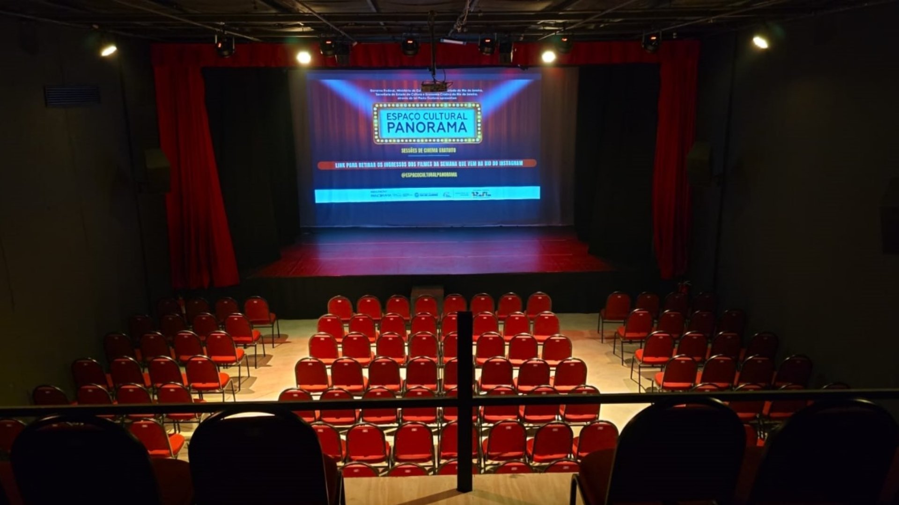

Teatro 270 lugares
Palco para artes cênicas, espetáculos, shows e eventos, com cessão para artistas da região e ingressos populares.
Nosso principal polo
Teatro, estúdio de podcast e serviços de audiovisual no coração do Colubandê, São Gonçalo.
Espetáculos, shows e eventos no palco do Panorama.
Nenhum espetáculo em cartaz no momento. Acompanhe nosso Instagram @espacoculturalpanorama para saber das próximas atrações.

O Espaço Cultural Panorama sedia as operações do Instituto São Paio. Reúne um teatro ativo para 270 pessoas e um estúdio de gravação profissional, ajudando a suprir a carência de equipamentos culturais do município.
É aqui que gerimos a programação, recebemos artistas e capacitamos as novas vozes da cidade.
@espacoculturalpanoramaPalco para artes cênicas, espetáculos, shows e eventos, com cessão para artistas da região e ingressos populares.
Estúdio profissional de áudio e vídeo, onde nascem projetos como o videocast "A Resenha do IES".
Captação, transmissão e produção de conteúdo, além de cursos gratuitos de formação na área.
Em breve: mais fotos do estúdio, dos bastidores e dos espetáculos.
Acompanhe a programação e fale com a gente para mais informações sobre o espaço e o estúdio.